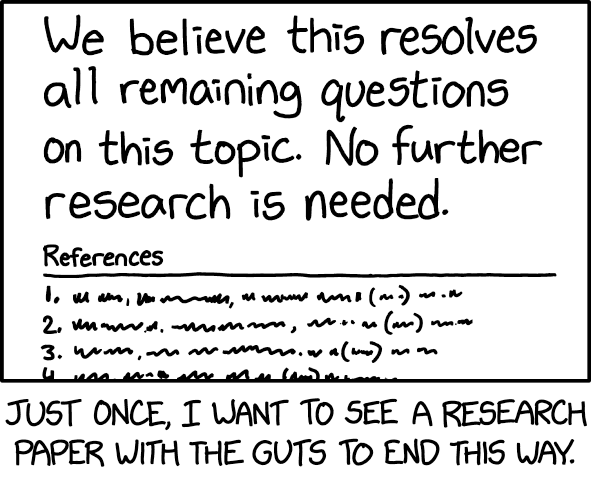

“Hell, my eighth grade science class managed to conclusively reject it just based on a classroom experiment. It’s pretty sad to hear about million-dollar research teams who can’t even manage that.” (Source: xkcd.org)
5.1 Parametric vs non-parametric comparisons
Parametric comparisons only work under certain conditions, such as if variables have certain distributions. Non-parametric comparisons always work.
Examples: mean versus median. Examples: t-tests versus tests of medians.
Bivariate analysis Review: t-test and Wilcoxon test Recall that T-tests are tests of whether means differ from each other. Parametric confidence intervals are formed around the mean plus or minus the t coefficient for the data degrees of freedom times the standard deviation. For large sample size, the t- coefficient approaches 1.96, which you can just call 2. Recall that the Wilcoxon test is a test of medians. Nonparametric confidence intervals are formed around the median (the 50th percentile, the middle observation of the dataset). An example of a common nonparametric confidence interval is the interquartile range (IQR), the middle 50% of the dataset, between the 25th and 75th quartiles. The IQR is a nonparametric 50% confidence interval, although it’s not actually referred to that way. A non-parametric 95% confidence interval is the range between the 2.5 percentile and the 97.5 percentile: that is, the middle 95% of the data. Using a nonparametric test when a parametric test could be used reduces power slightly, in the case of using the Wilcoxon test instead of the t-test. For other nonparametric tests, the difference may be larger. For multiple categories, the nonparametric equivalent of the Wilcoxon test is the Kruskal- Wallis test.
5.1.1 t-test
t-test Random independent samples from a normal distribution. Gossett derived this formula in early 1900s from work at Guinness brewery; RA Fisher proved Gossett’s formula correct in 1925.
Increased sample size: parameter estimate −→ population average.
If population has a standard deviation of σ, se(\(\bar{Y}\)) = σ/√n, which has n-1 degrees of freedom.
The t-test follows from this definition, and also has df = n − 1.
t = (estimate − parameter)/ se(estimate)
t-test is relatively robust against departures from normality.
Comparing means, medians, and quartiles.
Graphical summaries: density plots, box and whisker plots, histograms Parametric and non-parametric tests, primarily the t-test and the Wilcoxon-Mann-Whitney rank-sum test.
5.1.2 Conditions for t-test
If two populations have the same standard deviations σ1 ≈ σ2 and approximately the same shapes.
If approximately the same sample sizes n1 ≈ n2, t-test is moderately impacted by long tails and not impacted much by skewness.
If sample sizes differ by too much n1 ̸= n2, t-test is moderately impacted by long tails and substantially impacted by skewness, but matters less for large samples.
If the skewness of the two populations differs considerably, t-tests can be misleading with small and moderate sample sizes.
If observations are not independent of each other — such as if data were collected in clusters of individuals, time, or space— then the t-test is not appropriate because the standard error does not accurately measure the difference in averages.
Simulation of how often t-tests are correct
5.1.3 Rank-sum test for unpaired data
Also called the Wilcoxon or Wilcoxon-Mann-Whitney test.
Non-parametric alternative to the t-test
Orders the data and adds the ranks in each group.
Evaluates whether medians differ.
Advantages: versatile, only slightly lower power than t-test.
Disadvantages: No confidence intervals.
5.1.4 Non-parametric test for paired data
Wilcoxon signed-rank test.
Sign test: tests hypothesis of no difference by evaluating whether about half of the differences between pairs are positive.
Evaluate with exact binomial test (n=number of pairs, probability of success = 0.5)
Permutation test — given two samples, rearrange the data N times, and see which percentage of those permutations are at least as extreme as the observed group differences.
Parametric tests for 2 groups Test and Command z-test chi-squared test chisq.test() t-test t.test() Assumptions/purpose Continuous variable has normal distribution Equivalent to z-test for 2 groups If z is normally distributed, z2 ∼ χ2(1). Random samples from symmetric distribution. Paired (paired=T) or unpaired (paired=F). Paired form uses a comma instead of tilde.
5.2 Effect size
Effect size P-values have been widely criticized because they are affected by large sample size. A clinically small effect in a large sample size will have a small p-value. Some journals have even banned p-values. “Effect size” is a general term meaning the size of the observed effect, and many measures including odds ratios, relative risks, and risk differences can serve as measures of effect size. In addition to these effect size measures, some specific measures are called effect size measures.
We can calculate Cohen’s effect size as the difference in means divided by the average standard deviation. This measure can take on any numerical value. Cohen’s effect size is evaluated by the rule of thumb that Cohen’s effect size (in absolute value) below 0.2 is inconsequential, between 0.2–0.5 is small, 0.5–0.8 is medium, and above 0.8 is large. Cohen’s effect size can be larger than 1. There are a number of other effect size measures like Hedge’s g that are slight variations on Cohen’s measure.
Test
R command
Options/notes
chi-squared test
chisq.test(tally())
The argument is a 2x2 table, so need to tally inside the chi-squared test command
t-test
t.test
paired=T for paired data
Wilcoxon rank-sum test
wilcox.test
paired=T for paired data
Regression
lm()
Summary statistics
favstats
Effect size
Calculate by hand
New library effectsize has functions like cohens_d()
5.3 Example: Height differences by gender
Francis Galton created a famous dataset of heights of adults and their parents, and it is in the mosaic package. The data has been cleaned of non-numeric entries for height such as “tall”, “short”, “idiotic”, and “deformed.”1 In this dataset, what is the difference btween males and females? The favstats command we learned already. The t-test comand is new.
library(mosaic)
Registered S3 method overwritten by 'mosaic':
method from
fortify.SpatialPolygonsDataFrame ggplot2
The 'mosaic' package masks several functions from core packages in order to add
additional features. The original behavior of these functions should not be affected by this.
Attaching package: 'mosaic'
The following objects are masked from 'package:dplyr':
count, do, tally
The following object is masked from 'package:Matrix':
mean
The following object is masked from 'package:ggplot2':
stat
The following objects are masked from 'package:stats':
binom.test, cor, cor.test, cov, fivenum, IQR, median, prop.test,
quantile, sd, t.test, var
The following objects are masked from 'package:base':
max, mean, min, prod, range, sample, sum
favstats(~height, groups=sex, data=Galton)
sex min Q1 median Q3 max mean sd n missing
1 F 56 62.5 64.0 65.5 70.5 64.11016 2.370320 433 0
2 M 60 67.5 69.2 71.0 79.0 69.22882 2.631594 465 0
Welch Two Sample t-test
data: height by sex
t = -30.662, df = 895.02, p-value < 2.2e-16
alternative hypothesis: true difference in means between group F and group M is not equal to 0
95 percent confidence interval:
-5.446293 -4.791018
sample estimates:
mean in group F mean in group M
64.11016 69.22882
wilcox.test(height ~ sex, data=Galton)
Wilcoxon rank sum test with continuity correction
data: height by sex
W = 15256, p-value < 2.2e-16
alternative hypothesis: true location shift is not equal to 0
Males are on average 5’9” and females are on average 5’4” — males are between 4.8 and 5.4 inches taller than females, according to a 95% confidence interval.
5.4 HELP RCT
We can use significance tests in the Health Evaluation and Linkage to Primary Care RCT for both continuous and categorical variables. A common concern in randomized trials is whether randomization resulted in similar numbers of important variables. We can evaluate whether there’s any age difference by treatment status.
treat min Q1 median Q3 max mean sd n missing
1 no 20 31 35 41 59 36.30263 8.141945 228 0
2 yes 19 30 35 39 60 34.99556 7.205217 225 0
wilcox.test(age ~ treat, data=HELPrct)
Wilcoxon rank sum test with continuity correction
data: age by treat
W = 27592, p-value = 0.1629
alternative hypothesis: true location shift is not equal to 0
Based on the histogram, the age distribution may be slightly right-skewed, so we use a Wilcoxon test. We see that there is no difference on average in the ages of the treatment and control participants, who are both 35 years old at median (control group IQR 31–41, treatment group IQR 30–39)). The primary outcome of the study may have been days to linkage to primary care. We can do a bivariate analysis of that outcome.
treat min Q1 median Q3 max mean sd n missing
1 no 9 331 365.0 365 456 322.7081 103.7741 209 19
2 yes 2 35 120.5 365 449 192.4324 161.1661 222 3
wilcox.test(dayslink ~ treat, data=HELPrct)
Wilcoxon rank sum test with continuity correction
data: dayslink by treat
W = 32910, p-value = 1.379e-14
alternative hypothesis: true location shift is not equal to 0
We see from the histogram that it’s definitely not a symmetric distribution. At median, the treatment group was linked to primary care within 121 days and the control group was linked to primary care wthin 365 days, which is a statistically significant difference (p < 0.001). Sometimes, results are statistically significant without being important, so we can calculate a Cohen’s effect size from the information in the favstats output: (322.7-192.4)/((103.8+161.2)/2)=0.98 whch is a large Cohen’s effect size. Another primary outcome may have been time to use any substance.
treat min Q1 median Q3 max mean sd n missing
1 no 0 3.00 32.0 161.00 260 72.35088 78.74468 114 114
2 yes 0 7.25 41.5 164.75 268 77.90000 79.88071 130 95
wilcox.test(daysanysub ~ treat, data=HELPrct)
Wilcoxon rank sum test with continuity correction
data: daysanysub by treat
W = 6957, p-value = 0.4105
alternative hypothesis: true location shift is not equal to 0
The distribution of days to any substance use is highly right-skewed due to zero inflation (many had 0 days to use any substance). At median, the treatment group had 41.5 days to use any substance and the control group had 32.0 days to use any sbustance, but the difference is not statistically signfiicant (p=0.4). However, among the treatment group 95 observations were missing and among the control group 114 were missing, which is close to half of each group, and we don’t know why. Another primary outcome may have been whether they used any substance after treatment. We can also do a significance test for that outcome.
Pearson's Chi-squared test
data: tally(anysub ~ treat, data = HELPrct, format = "count")
X-squared = 2.7678, df = 2, p-value = 0.2506
After excluding missing observations, there’s no difference in the percentage who used any substance after detox between the treatment and control groups (77.1% treatment group vs. 77.4% control group, p=0.3); as before, there was substantial missing data.
5.5 Statistical significant
Statistically significant others xkcd
“… okay, but because you said that, we’re breaking up.” (Source:xkcd)
5.6 Interpreting test results

Further research is needed, xkcd
“Further research is needed to fully understand how we managed to do such a good job.” Source: xkcd